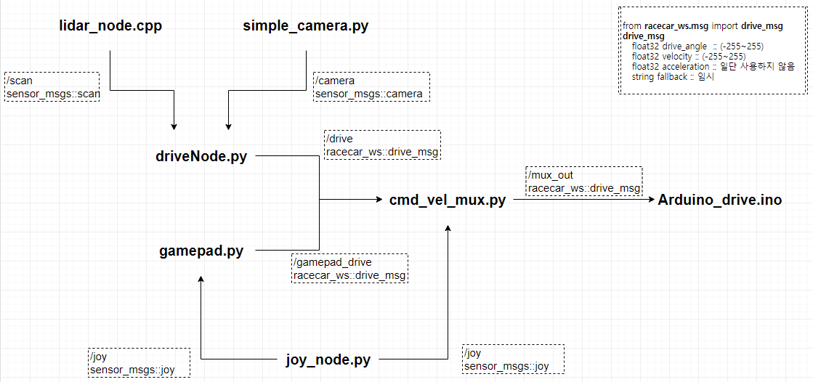
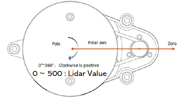

RACECAR 장비 소개
RACECAR
RACECAR ROS 노드 개요

RACECAR 부품 및 기능

RACECAR 센서 리스트
- 카메라 - simple_camera.py 노드
이미지 파일을 bgr 타입으로 발행(publish)함 'rviz'명령어를 통해서 카메라 영상을 볼 수 있음.
- ydlidar-X2 - lidar_node.cpp 노드

LIDAR 정보를 발행(publish)함 LIDAR 정보 'Rviz'로 확인하는 방법
$ roslaunch ydlidar ydlidar_view.launch
LIDAR 정보 확인방법
$ roslaunch ydlidar lidar.launch
$ rosrun ydlidar ydlidar_client
- Arduino - Arduino_drive.ino 노드
- Jetson Nano - driveNode.py / cmd_vel_mux.py / gamepad.py / joy_node.py 노드
RACECAR 초기 설정법
1.하단에 건전지 삽입 후, 스위치를 'on'으로 변경한다.
2.라이다 케이블을 연결한다.
3.전원 케이블을 연결한다.
4.공유기 설정값을 맞춘다.
ssh -Xll racecar@192.168.0. RACECAR_NUMBER